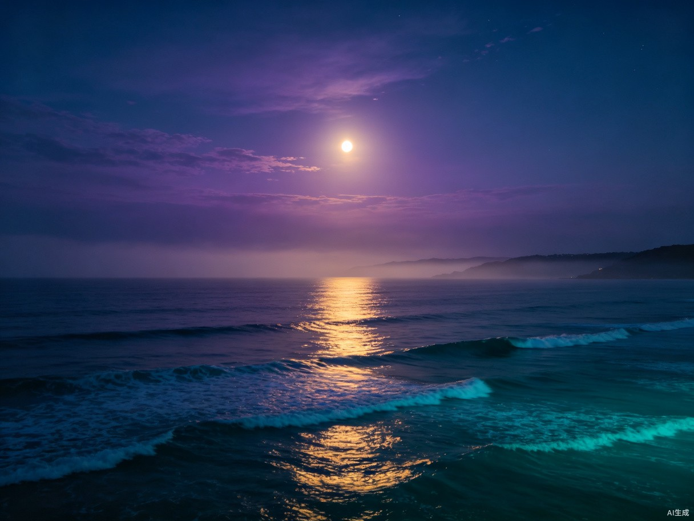

梦境图鉴
每一段梦境都是心灵投射的画卷。在这里，浏览和回溯那些已还原的梦境碎片，感受意识深处的低语。

月下潮汐
2026-06-18
宁静
神秘
柔和的月光洒落在无尽的海面上，潮汐缓缓涌动，仿佛大地在轻声呼吸。远处传来鲸鱼的低鸣。

水晶之城
2026-06-12
奇幻
城市的建筑如同巨大的水晶棱柱，在暮色中折射出万千光芒。街道上空无一人，只有光在流动。
翠林深径
2026-06-05
宁静
无尽的翠绿森林中，一条小径蜿蜒深入。树叶间洒落的光斑如同星尘，空气中弥漫着泥土与露水的气息。
云端飞行
2026-05-29
冒险
身体变得轻盈如羽毛，乘着暖风升入云端。脚下的世界变得渺小，远方传来悠远的钟声。
旧日暖炉
2026-05-22
温暖
回到童年的老屋里，壁炉中的火光映红了每个人的脸庞。窗外的雪静静落下，屋内满是笑声。
星轨漫游
2026-05-15
奇幻
冒险
穿行于星轨之间，周围是旋转的银河与流光。时间在这里失去了意义，只有永恒的宁静与惊叹。